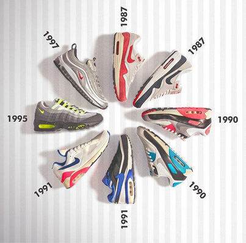

De geschiedenis van de Air max.
Nike introduceerde de Air Cushioning Technology in 1979. Door het aanbrengen van Air Max demping in de zolen van de Nike Air sneakers, ging er een wereld open voor sporters! Acht jaar later blijft Nike de wetenschappelijke ontdekkingen doorvoeren in de schoenen. Ook wordt in 1987 de Air-unit voor het eerst zichtbaar gemaakt in de Nike Air schoenen. Sindsdien konden atleten de voordelen van de Nike Air schoenen niet alleen voelen maar ook daadwerkelijk zien. In de loop der jaren zijn er velen Nike Air producten ontwikkeld. Sommige modellen daarvan zijn uitgegroeid tot een icoon.

De belangrijkste modellen in volgorde van tijd.
Tot op de dag van vandaag blijft Nike de Nike Air Max talloze keren opnieuw uitbrengen in een retro model, gemaakt van verschillende materialen en samenwerkingen met diverse ontwerpers.
De Nike Air Max combineert de klassieke vormgeving met indrukwekkende prestaties, Nike Air Max schoenen zijn prima geschikt voor in de sportschool en op straat. Deze kleurrijke sneakers lijken vrijwel hetzelfde als ze deden op hun eerste release in 1987, met inbegrip van de vorm, Nike Air Max unit in de hiel en de vette colorways die bij een breed scala aan kleding passen.
Of je ze nu tijdens een avondje uit draagt, of meer met een casual jeans of korte broek.. de Nike Air Max 1 past overal bij! Om een zo breed mogelijke doelgroep aan te kunnen spreken ontwerpt Nike de Nike Air Max 1 schoenen met diverse verschillende uppers (bovenkant van de sneaker). Een bovenkant met gaas is goed geschikt voor mensen die regelmatig de sportschool bezoeken of hardlopen. Mensen die schoenen dragen tijdens een avondje stappen kunnen het beste een sneaker met een suède of lederen bovenkant kiezen.